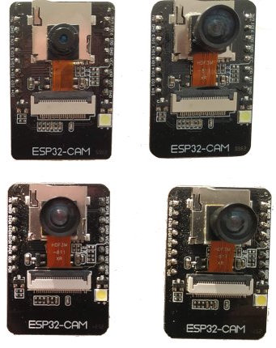
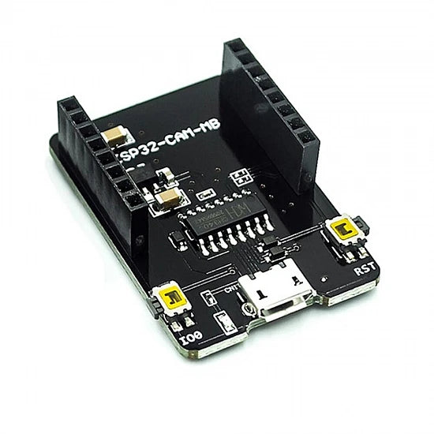
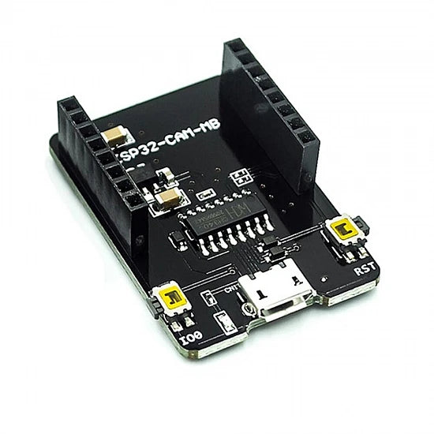

This started as a university project — a simple assignment to make a "networked sensor" — and somehow turned into a tiny clandestine camera that fits in the palm of my hand. I used the esp32-cam-webserver (an expanded version of Espressif's CameraWebServer) as the base for everything: wiring, web UI and streaming. The example I used is the easytarget/esp32-cam-webserver project.
If you're new: the ESP32-CAM modules combine a microcontroller, a camera sensor (OV2640 in many case) and a few pins exposed for programming and control. (I used a Dev-Board beacuase I couldn't trust my friends to not fry the board)
For my build I used:
- ESP32-CAM module (with OV2640)
- Dev-Board with MicroUSB port (for uploading the sketch)
- Well-powered supply that can supply a steady 5V (or 3.3V through a regulator) — the camera is picky about power
Hardwares Demonstration
 

Flashing the firmware (The Easy way)
I used the Arduino IDE to compile and flash the sketch from the repo. The sketch exposes
a small web server — you power the board, the serial prints an IP, and visiting that IP in
a browser gives you a live MJPEG stream and control pages.
The repo already has the web UI and helpers; you can tweak resolution, flip the image, and enable
OTA updates for more advanced workflows.
Board & IDE settings
- Install the ESP32 board support in Arduino IDE (search "esp32 by Espressif Systems" in Boards Manager).
- In Tools > Board choose AI Thinker ESP32-CAM (or the board matching your module).
- Select the correct COM port, hit Upload. If upload hangs, ensure GPIO0 is grounded and press RESET when the uploader output shows the initial boot message.
Configure the sketch
Open myconfig.sample.h in the repo, copy it to myconfig.h, then set:
- Enable
AP Modeor your Hotspot won't be enabled for you to connect WIFI_SSIDandWIFI_PASSWORD- Camera model if asked (OV2640 is common for AI-Thinker)
- Any stream or webserver options you want
Then recompile and upload. Once the sketch boots, the serial monitor (115200 baud) will often print the IP address assigned by your router — type that in a browser on the same network to view the web UI or stream.
From class demo to multi-use gadget
What began as a graded assignment quickly became a tool for experiments. I used it to:
- Monitor my room (time-lapse snapshots)
- Quickly prototype visual detection ideas on a laptop via HTTP snapshots
- Learn about supply-stability: short power cables and a stable 5V made the difference between smooth streaming and constant reconnects
Making it a spy gadget (the fun, low-effort tweaks)
Once the camera is stable on your network, you can add small touches :
- Hide the module inside a small project box and poke just the lens through a tiny hole.
- Use the web UI to set low resolution for longer battery life and more discreet streaming.
- Mount it like a dummy alarm sensor or tuck it behind a fake book — remember to obey laws and ethics: never record people where they expect privacy.
Advanced ideas (when you're ready)
If you want to go beyond the basic sketch:
- plug out the Dev-Board and mount a chargable battery in the back of your board to work without being plugged to a PC & be able to hide it in better spots.
- Look for actively maintained ESP32 webcam projects (newer cores and libraries) if you need modern compatibility.
- Add microSD logging (some modules support it) for local snapshots.
- Integrate with Home Assistant or a small MQTT bridge for event-based imaging.
Final notes
This project turned a classroom exercise into a versatile little device. If you follow the repo's instructions for wiring, programming, and the provided web server, you can have a camera on your network in an evening. Tinker and learn.